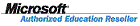
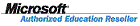
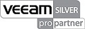
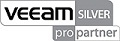

SARK IP Telephony
SARK UCS/MVP is a hybrid TDM/IP PBX softswitch for the SMB/SME market segment. It is based upon Digium's Asterisk soft-switch running on SME Server Linux, a hardened variant of CentOS. SARK UCS/MVP has established a reputation for being extremely reliable, highly functional and particularly well equipped for remote support, making it very attractive to resellers. Moreover, it is well able to compete with traditional proprietary PBX platforms while offering a much lower overall cost-of-ownership to the user.
Key Features
- 4 to 1000 users
- Open Standards SIP System
- Fully Supported within the UK
- Advanced IP phone management
- Automatic IP detection
- Almost all features included as standard (queues, voicemail, etc)
Add ons
- Call reporting
- Call recording
- HA system - auto failover to backup system
| PBX | Extensions | Concurrent calls | SIP/IAX trunks | IVR | Ring groups | Conference bridge |
|---|---|---|---|---|---|---|
| SARK 650 | 6 - 20 | 1 - 8 calls | Unlimited | Multi Level | Unlimited | Unlimited |
| SARK 850 | 12 - 50 | 6 - 30 calls | Unlimited | Multi Level | Unlimited | Unlimited |
| SARK 1000 | 40 - 150 | 12 - 60 calls | Unlimited | Multi Level | Unlimited | Unlimited |
| SARK 1200 | 100 - 250 | 30 - 120 calls | Unlimited | Multi Level | Unlimited | Unlimited |
 



 
;){kind=link}
;){kind=link}